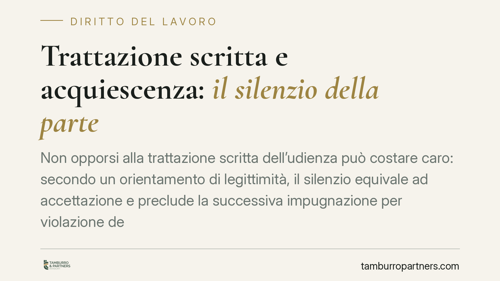

Trattazione scritta e acquiescenza: il silenzio della parte
Non opporsi alla trattazione scritta dell'udienza può costare caro: secondo un orientamento di legittimità, il silenzio equivale ad accettazione e preclude la successiva impugnazione per violazione dell'oralità. Un principio che nel rito del lavoro assume contorni particolari, dove la "cartolarizzazione" dell'udienza non è ammessa indistintamente in ogni fase del giudizio.

Il caso e il principio
La questione ruota attorno a un punto apparentemente procedurale, con ricadute concrete pesanti: cosa accade quando il giudice dispone la trattazione scritta dell'udienza e la parte resta in silenzio.
Secondo un orientamento della Corte di Cassazione, Sezione Lavoro, la mancata opposizione alla trattazione scritta configura una forma di acquiescenza. Tradotto: chi non contesta tempestivamente la modalità scelta dal giudice non può poi lamentarsene in sede di impugnazione, invocando la violazione del principio di oralità.
> Nota redazionale. Gli estremi puntuali della pronuncia (numero, sezione, data) sono in corso di verifica su banca dati CED/Italgiure. Fino al riscontro definitivo, il contributo espone il principio come orientamento e non come precedente singolo identificato. Non si riportano massime attribuite a una decisione specifica.
Inquadramento normativo
L'art. 127-ter c.p.c., introdotto nell'ambito della riforma del processo civile, disciplina la cosiddetta udienza a trattazione scritta. Il giudice può sostituire l'udienza in presenza con il deposito di note scritte, assegnando alle parti un termine per il deposito delle proprie difese.
La norma prevede un meccanismo di tutela: ciascuna parte può opporsi, entro un termine stabilito, chiedendo che l'udienza si svolga nelle forme ordinarie. È proprio su questa facoltà di opposizione che si innesta la questione dell'acquiescenza.
Il silenzio-accettazione, in questo contesto, non deriva da una regola positiva espressa, bensì da una costruzione giurisprudenziale che estende alla scelta sulla modalità d'udienza la logica dell'art. 329 c.p.c., norma pensata per l'acquiescenza alle sentenze. Si tratta di una lettura plausibile ma non codificata: va quindi maneggiata con la cautela che merita ogni applicazione analogica.
La specificità del rito del lavoro
Nel processo del lavoro la trattazione scritta incontra un limite ulteriore. L'oralità e la concentrazione non sono orpelli, ma caratteri strutturali del rito, pensati per garantire l'immediatezza del contraddittorio e il contatto diretto tra giudice e parti.
Per questo, un orientamento ritiene che la cartolarizzazione dell'udienza sia ammissibile solo per la fase decisoria, dove il confronto si gioca essenzialmente su argomentazioni scritte. Più problematica è l'estensione alla fase introduttiva e istruttoria, dove l'oralità assolve funzioni difficilmente surrogabili: il tentativo di conciliazione, l'interrogatorio libero, l'assunzione della prova testimoniale.
Si tratta, va detto, di un orientamento non pacifico. Non siamo davanti a una regola positiva certa, ma a una lettura che tiene insieme la norma generale e le peculiarità del rito speciale.
Implicazioni pratiche
Il combinato di questi due profili produce un effetto netto per la parte processuale e per il difensore.
Da un lato, il silenzio non è neutro: può consolidarsi in una scelta processuale irreversibile, precludendo censure successive. Dall'altro, nel rito del lavoro resta spazio per contestare la trattazione scritta quando viene disposta in fasi dove l'oralità non è comprimibile.
La conseguenza operativa è che la gestione del decreto che dispone la trattazione scritta diventa un passaggio da presidiare attivamente, non da subire.
Cosa fare in concreto
- Monitorare la cancelleria e i depositi telematici per intercettare tempestivamente il decreto che dispone la trattazione scritta: il termine per opporsi decorre da quel momento.
- Calendarizzare immediatamente la scadenza per l'eventuale opposizione, trattandola come termine processuale a tutti gli effetti.
- Valutare, quando la trattazione scritta investa la fase introduttiva o istruttoria del rito del lavoro, se sia opportuno opporsi in modo motivato, esplicitando le esigenze di oralità non comprimibili.
- Documentare data e contenuto del deposito dell'opposizione, conservando evidenza telematica dell'avvenuta trasmissione.
- Verificare, prima di qualsiasi impugnazione fondata sulla violazione dell'oralità, se l'opposizione sia stata effettivamente proposta nei termini: in assenza, la censura rischia la preclusione.
---
*Contributo informativo a cura di Tamburro & Partners - Avv. Giuseppe Tamburro. Non costituisce parere legale.*
Ogni storia di lavoro ha i suoi tempi.
Se gestisci HR e vuoi un confronto su contenzioso, ispezioni o licenziamenti, scrivi allo studio. Ti rispondiamo entro un giorno lavorativo.